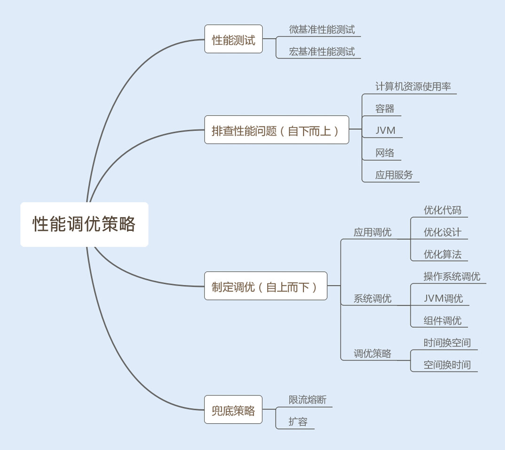

- 00 开篇词你为什么需要学习并发编程？.md.html
- 01 如何制定性能调优标准？.md.html
- 02 如何制定性能调优策略？.md.html
- 03 字符串性能优化不容小觑，百M内存轻松存储几十G数据.md.html
- 04 慎重使用正则表达式.md.html
- 05 ArrayList还是LinkedList？使用不当性能差千倍.md.html
- 06 Stream如何提高遍历集合效率？.md.html
- 07 深入浅出HashMap的设计与优化.md.html
- 08 网络通信优化之IO模型：如何解决高并发下IO瓶颈？.md.html
- 09 网络通信优化之序列化：避免使用Java序列化.md.html
- 10 网络通信优化之通信协议：如何优化RPC网络通信？.md.html
- 11 答疑课堂：深入了解NIO的优化实现原理.md.html
- 12 多线程之锁优化（上）：深入了解Synchronized同步锁的优化方法.md.html
- 13 多线程之锁优化（中）：深入了解Lock同步锁的优化方法.md.html
- 14 多线程之锁优化（下）：使用乐观锁优化并行操作.md.html
- 15 多线程调优（上）：哪些操作导致了上下文切换？.md.html
- 16 多线程调优（下）：如何优化多线程上下文切换？.md.html
- 17 并发容器的使用：识别不同场景下最优容器.md.html
- 18 如何设置线程池大小？.md.html
- 19 如何用协程来优化多线程业务？.md.html
- 20 磨刀不误砍柴工：欲知JVM调优先了解JVM内存模型.md.html
- 21 深入JVM即时编译器JIT，优化Java编译.md.html
- 22 如何优化垃圾回收机制？.md.html
- 23 如何优化JVM内存分配？.md.html
- 24 内存持续上升，我该如何排查问题？.md.html
- 25 答疑课堂：模块四热点问题解答.md.html
- 26 单例模式：如何创建单一对象优化系统性能？.md.html
- 27 原型模式与享元模式：提升系统性能的利器.md.html
- 28 如何使用设计模式优化并发编程？.md.html
- 29 生产者消费者模式：电商库存设计优化.md.html
- 30 装饰器模式：如何优化电商系统中复杂的商品价格策略？.md.html
- 31 答疑课堂：模块五思考题集锦.md.html
- 32 MySQL调优之SQL语句：如何写出高性能SQL语句？.md.html
- 33 MySQL调优之事务：高并发场景下的数据库事务调优.md.html
- 34 MySQL调优之索引：索引的失效与优化.md.html
- 35 记一次线上SQL死锁事故：如何避免死锁？.md.html
- 36 什么时候需要分表分库？.md.html
- 37 电商系统表设计优化案例分析.md.html
- 38 数据库参数设置优化，失之毫厘差之千里.md.html
- 39 答疑课堂：MySQL中InnoDB的知识点串讲.md.html
- 41 如何设计更优的分布式锁？.md.html
- 42 电商系统的分布式事务调优.md.html
- 43 如何使用缓存优化系统性能？.md.html
- 44 记一次双十一抢购性能瓶颈调优.md.html
- 加餐 什么是数据的强、弱一致性？.md.html
- 加餐 推荐几款常用的性能测试工具.md.html
- 答疑课堂：模块三热点问题解答.md.html
- 结束语 栉风沐雨，砥砺前行！.md.html
02 如何制定性能调优策略？
你好，我是刘超。
上一讲，我在介绍性能调优重要性的时候，提到了性能测试。面对日渐复杂的系统，制定合理的性能测试，可以提前发现性能瓶颈，然后有针对性地制定调优策略。总结一下就是“测试 - 分析 - 调优”三步走。
今天，我们就在这个基础上，好好聊一聊“如何制定系统的性能调优策略”。
性能测试攻略
性能测试是提前发现性能瓶颈，保障系统性能稳定的必要措施。下面我先给你介绍两种常用的测试方法，帮助你从点到面地测试系统性能。
1. 微基准性能测试
微基准性能测试可以精准定位到某个模块或者某个方法的性能问题，特别适合做一个功能模块或者一个方法在不同实现方式下的性能对比。例如，对比一个方法使用同步实现和非同步实现的性能。
2. 宏基准性能测试
宏基准性能测试是一个综合测试，需要考虑到测试环境、测试场景和测试目标。
首先看测试环境，我们需要模拟线上的真实环境。
然后看测试场景。我们需要确定在测试某个接口时，是否有其他业务接口同时也在平行运行，造成干扰。如果有，请重视，因为你一旦忽视了这种干扰，测试结果就会出现偏差。
最后看测试目标。我们的性能测试是要有目标的，这里可以通过吞吐量以及响应时间来衡量系统是否达标。不达标，就进行优化；达标，就继续加大测试的并发数，探底接口的 TPS（最大每秒事务处理量），这样做，可以深入了解到接口的性能。除了测试接口的吞吐量和响应时间以外，我们还需要循环测试可能导致性能问题的接口，观察各个服务器的 CPU、内存以及 I/O 使用率的变化。
以上就是两种测试方法的详解。其中值得注意的是，性能测试存在干扰因子，会使测试结果不准确。所以，我们在做性能测试时，还要注意一些问题。
1. 热身问题
当我们做性能测试时，我们的系统会运行得越来越快，后面的访问速度要比我们第一次访问的速度快上几倍。这是怎么回事呢？
在 Java 编程语言和环境中，.java 文件编译成为 .class 文件后，机器还是无法直接运行 .class 文件中的字节码，需要通过解释器将字节码转换成本地机器码才能运行。为了节约内存和执行效率，代码最初被执行时，解释器会率先解释执行这段代码。
随着代码被执行的次数增多，当虚拟机发现某个方法或代码块运行得特别频繁时，就会把这些代码认定为热点代码（Hot Spot Code）。为了提高热点代码的执行效率，在运行时，虚拟机将会通过即时编译器（JIT compiler，just-in-time compiler）把这些代码编译成与本地平台相关的机器码，并进行各层次的优化，然后存储在内存中，之后每次运行代码时，直接从内存中获取即可。
所以在刚开始运行的阶段，虚拟机会花费很长的时间来全面优化代码，后面就能以最高性能执行了。
这就是热身过程，如果在进行性能测试时，热身时间过长，就会导致第一次访问速度过慢，你就可以考虑先优化，再进行测试。
2. 性能测试结果不稳定
我们在做性能测试时发现，每次测试处理的数据集都是一样的，但测试结果却有差异。这是因为测试时，伴随着很多不稳定因素，比如机器其他进程的影响、网络波动以及每个阶段 JVM 垃圾回收的不同等等。
我们可以通过多次测试，将测试结果求平均，或者统计一个曲线图，只要保证我们的平均值是在合理范围之内，而且波动不是很大，这种情况下，性能测试就是通过的。
3. 多 JVM 情况下的影响
如果我们的服务器有多个 Java 应用服务，部署在不同的 Tomcat 下，这就意味着我们的服务器会有多个 JVM。任意一个 JVM 都拥有整个系统的资源使用权。如果一台机器上只部署单独的一个 JVM，在做性能测试时，测试结果很好，或者你调优的效果很好，但在一台机器多个 JVM 的情况下就不一定了。所以我们应该尽量避免线上环境中一台机器部署多个 JVM 的情况。
合理分析结果，制定调优策略
这里我将“三步走”中的分析和调优结合在一起讲。
我们在完成性能测试之后，需要输出一份性能测试报告，帮我们分析系统性能测试的情况。其中测试结果需要包含测试接口的平均、最大和最小吞吐量，响应时间，服务器的 CPU、内存、I/O、网络 IO 使用率，JVM 的 GC 频率等。
通过观察这些调优标准，可以发现性能瓶颈，我们再通过自下而上的方式分析查找问题。首先从操作系统层面，查看系统的 CPU、内存、I/O、网络的使用率是否存在异常，再通过命令查找异常日志，最后通过分析日志，找到导致瓶颈的原因；还可以从 Java 应用的 JVM 层面，查看 JVM 的垃圾回收频率以及内存分配情况是否存在异常，分析日志，找到导致瓶颈的原因。
如果系统和 JVM 层面都没有出现异常情况，我们可以查看应用服务业务层是否存在性能瓶颈，例如 Java 编程的问题、读写数据瓶颈等等。
分析查找问题是一个复杂而又细致的过程，某个性能问题可能是一个原因导致的，也可能是几个原因共同导致的结果。我们分析查找问题可以采用自下而上的方式，而我们解决系统性能问题，则可以采用自上而下的方式逐级优化。下面我来介绍下从应用层到操作系统层的几种调优策略。
1. 优化代码
应用层的问题代码往往会因为耗尽系统资源而暴露出来。例如，我们某段代码导致内存溢出，往往是将 JVM 中的内存用完了，这个时候系统的内存资源消耗殆尽了，同时也会引发 JVM 频繁地发生垃圾回收，导致 CPU 100% 以上居高不下，这个时候又消耗了系统的 CPU 资源。
还有一些是非问题代码导致的性能问题，这种往往是比较难发现的，需要依靠我们的经验来优化。例如，我们经常使用的 LinkedList 集合，如果使用 for 循环遍历该容器，将大大降低读的效率，但这种效率的降低很难导致系统性能参数异常。
这时有经验的同学，就会改用 Iterator （迭代器）迭代循环该集合，这是因为 LinkedList 是链表实现的，如果使用 for 循环获取元素，在每次循环获取元素时，都会去遍历一次 List，这样会降低读的效率。
2. 优化设计
面向对象有很多设计模式，可以帮助我们优化业务层以及中间件层的代码设计。优化后，不仅可以精简代码，还能提高整体性能。例如，单例模式在频繁调用创建对象的场景中，可以共享一个创建对象，这样可以减少频繁地创建和销毁对象所带来的性能消耗。
3. 优化算法
好的算法可以帮助我们大大地提升系统性能。例如，在不同的场景中，使用合适的查找算法可以降低时间复杂度。
4. 时间换空间
有时候系统对查询时的速度并没有很高的要求，反而对存储空间要求苛刻，这个时候我们可以考虑用时间来换取空间。
例如，我在 03 讲就会详解的用 String 对象的 intern 方法，可以将重复率比较高的数据集存储在常量池，重复使用一个相同的对象，这样可以大大节省内存存储空间。但由于常量池使用的是 HashMap 数据结构类型，如果我们存储数据过多，查询的性能就会下降。所以在这种对存储容量要求比较苛刻，而对查询速度不作要求的场景，我们就可以考虑用时间换空间。
5. 空间换时间
这种方法是使用存储空间来提升访问速度。现在很多系统都是使用的 MySQL 数据库，较为常见的分表分库是典型的使用空间换时间的案例。
因为 MySQL 单表在存储千万数据以上时，读写性能会明显下降，这个时候我们需要将表数据通过某个字段 Hash 值或者其他方式分拆，系统查询数据时，会根据条件的 Hash 值判断找到对应的表，因为表数据量减小了，查询性能也就提升了。
6. 参数调优
以上都是业务层代码的优化，除此之外，JVM、Web 容器以及操作系统的优化也是非常关键的。
根据自己的业务场景，合理地设置 JVM 的内存空间以及垃圾回收算法可以提升系统性能。例如，如果我们业务中会创建大量的大对象，我们可以通过设置，将这些大对象直接放进老年代。这样可以减少年轻代频繁发生小的垃圾回收（Minor GC），减少 CPU 占用时间，提升系统性能。
Web 容器线程池的设置以及 Linux 操作系统的内核参数设置不合理也有可能导致系统性能瓶颈，根据自己的业务场景优化这两部分，可以提升系统性能。
兜底策略，确保系统稳定性
上边讲到的所有的性能调优策略，都是提高系统性能的手段，但在互联网飞速发展的时代，产品的用户量是瞬息万变的，无论我们的系统优化得有多好，还是会存在承受极限，所以为了保证系统的稳定性，我们还需要采用一些兜底策略。
什么是兜底策略？
第一，限流，对系统的入口设置最大访问限制。这里可以参考性能测试中探底接口的 TPS 。同时采取熔断措施，友好地返回没有成功的请求。
第二，实现智能化横向扩容。智能化横向扩容可以保证当访问量超过某一个阈值时，系统可以根据需求自动横向新增服务。
第三，提前扩容。这种方法通常应用于高并发系统，例如，瞬时抢购业务系统。这是因为横向扩容无法满足大量发生在瞬间的请求，即使成功了，抢购也结束了。
目前很多公司使用 Docker 容器来部署应用服务。这是因为 Docker 容器是使用 Kubernetes 作为容器管理系统，而 Kubernetes 可以实现智能化横向扩容和提前扩容 Docker 服务。
总结
学完这讲，你应该对性能测试以及性能调优有所认识了。我们再通过一张图来回顾下今天的内容。

我们将性能测试分为微基准性能测试和宏基准性能测试，前者可以精准地调优小单元的业务功能，后者可以结合内外因素，综合模拟线上环境来测试系统性能。两种方法结合，可以更立体地测试系统性能。
测试结果可以帮助我们制定性能调优策略，调优方法很多，这里就不一一赘述了。但有一个共同点就是，调优策略千变万化，但思路和核心都是一样的，都是从业务调优到编程调优，再到系统调优。
最后，给你提个醒，任何调优都需要结合场景明确已知问题和性能目标，不能为了调优而调优，以免引入新的 Bug，带来风险和弊端。
思考题
假设你现在负责一个电商系统，马上就有新品上线了，还要有抢购活动，那么你会将哪些功能做微基准性能测试，哪些功能做宏基准性能测试呢？
期待在留言区看到你的答案。也欢迎你点击“请朋友读”，把今天的内容分享给身边的朋友，邀请他一起讨论。